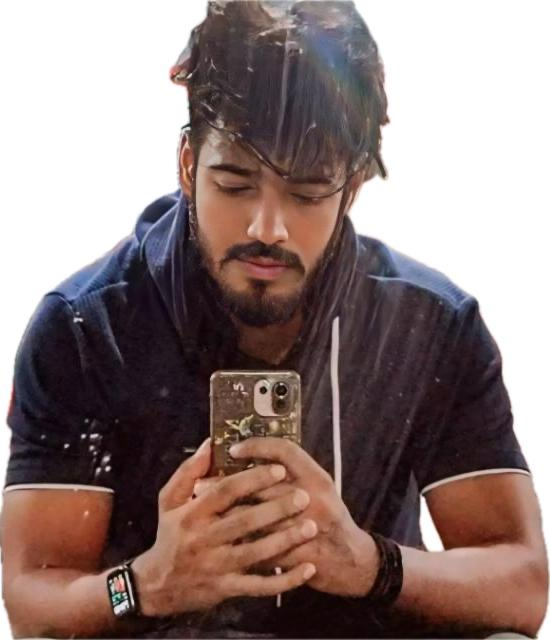

Kshitij Kumar Singh
Aspiring Cloud Computing Professional | MCA @ Galgotias University
📞 8434049711 | ✉️ kshitijkumar623@gmail.com
About Me
To be a part of an organization where I can utilize my knowledge, skills, and dedication to contribute meaningfully to its growth while continuously improving myself professionally.
Education
- MCA (Pursuing) in Cloud Computing - Galgotias University (2026*) - 7.64 CGPA (Appearing)
- BCA - M.V College, VKSU (2023) - 69.89%
- 12th - M.V College, Bihar Board (2018) - 61%
- 10th - Harihar Singh Academy, CBSE (2016) - 10 CGPA
Skills
- Languages: Python, Java, C, C++, HTML, CSS, JavaScript
- Frameworks/Technologies: Bootstrap, jQuery, JDBC, Servlet, JSP
- Database: MySQL, Oracle
- Cloud: AWS Basics, Virtualization, Docker
- Tools: Git & GitHub, Eclipse, VS Code, NetBeans
- Office Tools: MS Word, MS Excel, MS PowerPoint
Certifications
- CCNA: Introduction to Networks – Cisco – Apr 2025
- Introduction to the Fundamentals of Databases – Simplilearn – Jan 2025
- Programming in C# – Simplilearn – Jan 2025
Projects
- Face Recognition System – Built using OpenCV and Python
- Online Voting System – Developed with Java, JDBC, Servlet, MySQL
- Library Management System – Java-based book management system
- Portfolio Website – HTML, CSS, JavaScript deployed on GitHub Pages
Experience
Operated and managed a Cyber Cafe Business involving IT tasks, document handling, and customer support.
Achievements & Leadership
- House Captain
- Sports Captain
- Class Prefect
Strengths
- Ability to work under pressure and meet deadlines
- Quick learner and adaptable
- Excellent time management
- Hardworking and patient
Hobbies
- Playing Cricket
- Fitness Enthusiast